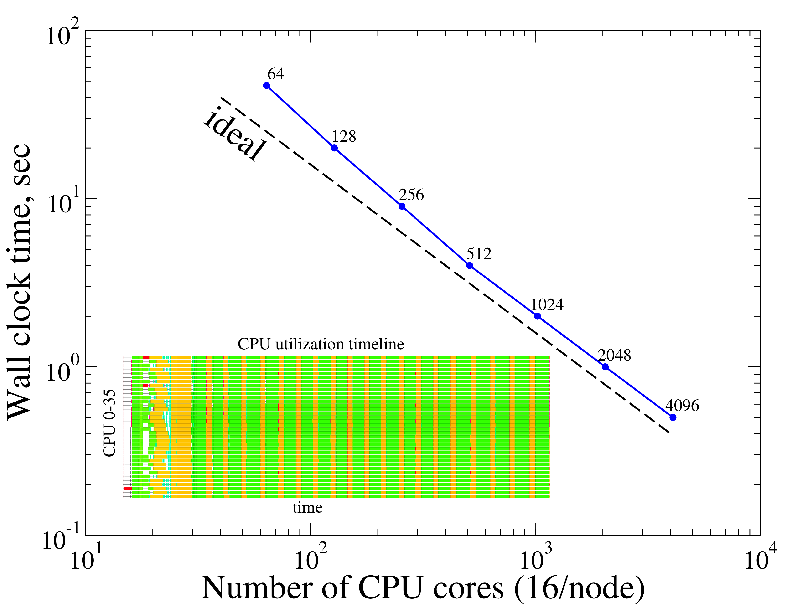

Inciter performance
This page quantifies different aspects of the computational performance of Inciter.
Strong scaling

This figure quantifies the excellent scalability of inciter, integrating the advection-diffusion scalar transport equation for 10 time steps using a 76-million-cell mesh, where the timing included measuring setup as well as reading the mesh and periodically outputting the solution, using approximately 4 thousand CPUs. The insert depicts the CPU utilization from Charm++'s performance analysis tool, Projections, showing excellent resource usage during setup (left side) as well as during the 10 two-stage time-steps.Effects of overdecomposition
The figures below demonstrate typical effects of overdecomposition, partitioning the computational domain into more work units than the number of available processors. The leftmost side of the figures corresponds to the case where the number of work units (chares) equal the number of CPUs – this is labelled as "classic MPI", as this is how distributed-memory-parallel codes are traditionally used with the MPI (message passing) paradigm. As the problem is decomposed into more partitions, the chunks become smaller but require more communication as the boundary/domain element ratio increases. Smaller chunks, however, are faster to migrate to other CPUs if needed and fit better into local processor cache. (Note that migration was not enabled for these examples.) As a result the problem can be computed a lot faster, in this case, approximately 50 times(!) faster. Though finding such sweet spots require experimentation and certainly depends on the problem, problem size, and hardware configuration, the interesting point is that such a large performance gain is possible simply by allowing overdecomposition without the use of multiple software abstractions, e.g., MPI + threading. All of this code is written using a single and high-level parallel computing abstraction: Charm++ without explicit message passing code.
 Total runtime, simply measured by the Unix time utility, including setup and I/O, of integrating the coupled governing equations of mass, momentum, and energy for an ideal gas, using a continuous Galerkin finite element method. The times are normalized and compared to the leftmost (classic MPI) data. As expected, using just a few more partitions per CPU results in a performance degradation as more communication is required. However, further increasing the degree of overdecomposition to about 5 times the number of CPUs yields an excellent speedup of over 10x(!) due to better cache utilization and overlap of computation and communication.
Total runtime, simply measured by the Unix time utility, including setup and I/O, of integrating the coupled governing equations of mass, momentum, and energy for an ideal gas, using a continuous Galerkin finite element method. The times are normalized and compared to the leftmost (classic MPI) data. As expected, using just a few more partitions per CPU results in a performance degradation as more communication is required. However, further increasing the degree of overdecomposition to about 5 times the number of CPUs yields an excellent speedup of over 10x(!) due to better cache utilization and overlap of computation and communication. This figure depicts another manifestation of the effect of overdecomposition: compared to the previous figure, here we only measured the time required to advance the equations without setup and I/O, which is usually the dominant fraction of large scientific computations. The performance gain during time stepping is even larger, reaching almost 50 times(!) compared to the original run without overdecomposition.
This figure depicts another manifestation of the effect of overdecomposition: compared to the previous figure, here we only measured the time required to advance the equations without setup and I/O, which is usually the dominant fraction of large scientific computations. The performance gain during time stepping is even larger, reaching almost 50 times(!) compared to the original run without overdecomposition.